Site index models included in the package
si_alemdag1991()
- Function reference:
si_alemdag1991() - Description: Alemdag (1991) national (Canada-wide) modified Chapman-Richards site-index and height-growth model for white spruce in natural stands Alemdag (1991)
- Age type: Breast-height age
- Coverage: Canada (all provinces/territories)
- Species coverage: PICE.GLA
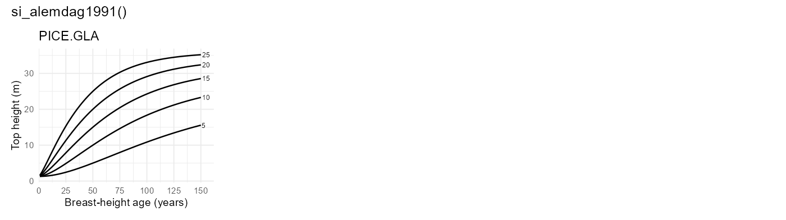
si_augerward2021()
- Function reference:
si_augerward2021() - Description: Auger and Ward (2021) Quebec plantation site-index model Auger and Ward (2021)
- Age type: Total age
- Coverage: QC
- Species coverage: PICE.MAR, PINU.BAN
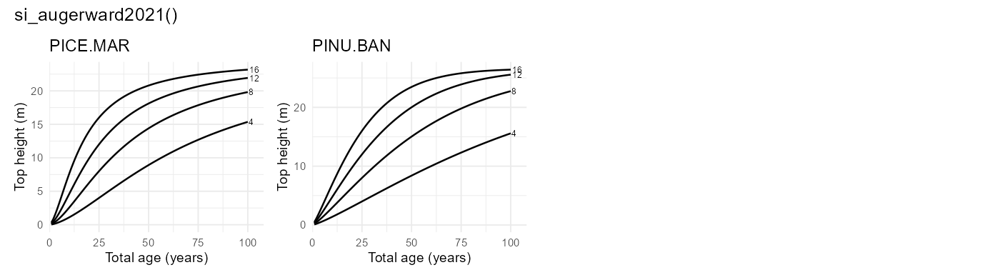
si_batho2014()
- Function reference:
si_batho2014() - Description: Batho and Garcia (2014) polymorphic Bertalanffy-Richards height-age (site index) model for lodgepole pine in the Sub-Boreal Spruce zone of British Columbia Batho and García (2014)
- Age type: Breast-height age
- Coverage: BC
- Species coverage: PINU.CON
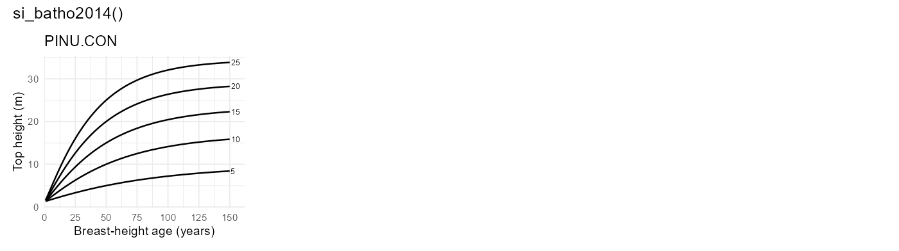
si_buckman2006()
- Function reference:
si_buckman2006() - Description: Buckman et al. (2006) piecewise red pine site-index model Buckmann et al. (2006)
- Age type: Total age
- Coverage: ON
- Species coverage: PINU.RES
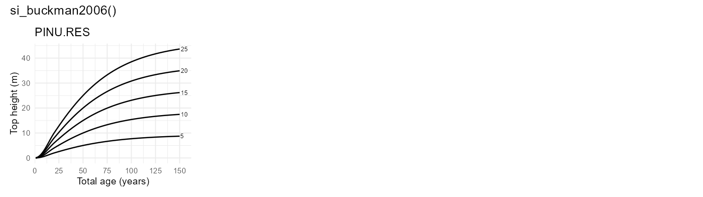
si_carmean1989()
- Function reference:
si_carmean1989() - Description: Carmean et al. (1989) eastern species site-index model set Carmean et al. (1989)
- Age type: Total age
- Coverage: NB, NL, NS, ON, PE, QC
- Species coverage: ACER.SAH, BETU.ALL, CHAM.THY, FAGU.GRA, FRAX.AME, FRAX.NIG, PRUN.SER, QUER.RUB, TILI.AME, TSUG.CAN, ULMU.AME
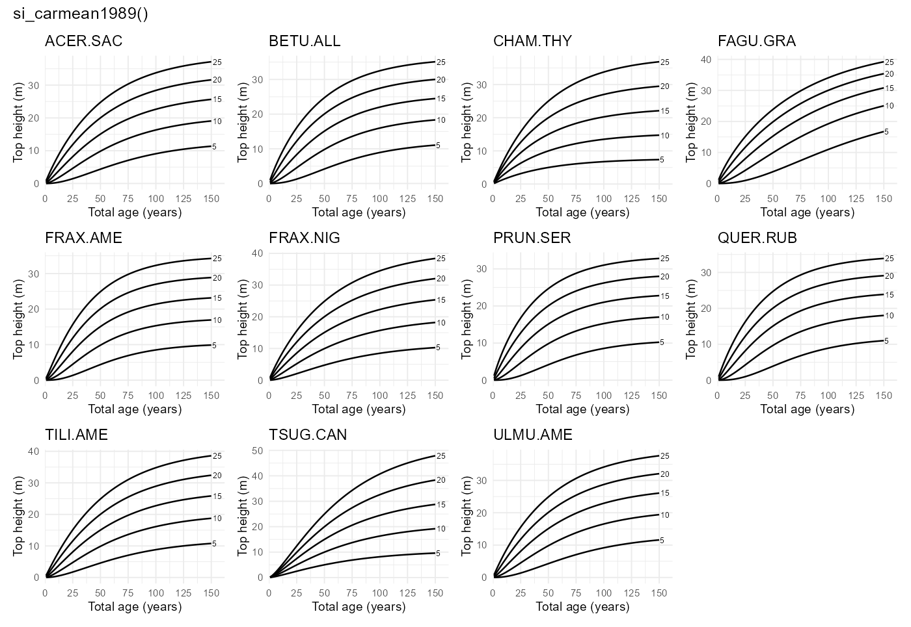
si_carmean1996()
- Function reference:
si_carmean1996() - Description: Carmean (1996) northwest Ontario site-index model set Carmean (1996)
- Age type: Breast-height age
- Coverage: ON
- Species coverage: ABIE.BAL, BETU.PAP, LARI.LAR, PICE.GLA, PICE.MAR, PINU.BAN, POPU.TRE
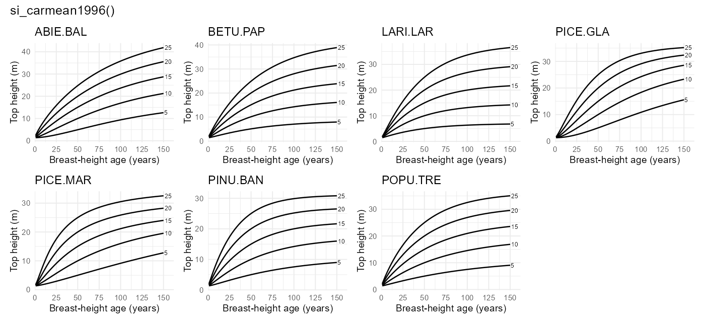
si_carmean2001()
- Function reference:
si_carmean2001() - Description: Carmean, Niznowski and Hazenberg (2001) polymorphic (Newnham) site-index model for jack pine in northern Ontario Carmean et al. (2001)
- Age type: Breast-height age
- Coverage: ON
- Species coverage: PINU.BAN
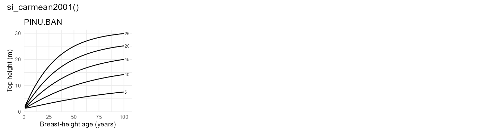
si_carmean2006()
- Function reference:
si_carmean2006() - Description: Carmean, Hazenberg and Deschamps (2006) polymorphic (Newnham) site-index model for black spruce and trembling aspen in northwest Ontario Carmean et al. (2006)
- Age type: Breast-height age
- Coverage: ON
- Species coverage: PICE.MAR, POPU.TRE
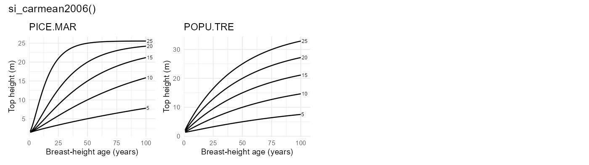
si_carmeanhahn1981()
- Function reference:
si_carmeanhahn1981() - Description: Lake States site-index model for balsam fir and white spruce Carmean and Hahn (1981)
- Age type: Total age
- Coverage: ON
- Species coverage: ABIE.BAL, PICE.GLA
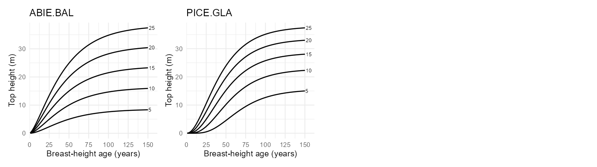
si_cieszewski1993()
- Function reference:
si_cieszewski1993() - Description: Cieszewski, Bella and Yeung (1993) preliminary variable-age site-index model for eleven Saskatchewan species Cieszewski et al. (1993)
- Age type: Breast-height age
- Coverage: SK
- Species coverage: ABIE.BAL, ACER.NEG, BETU.PAP, LARI.LAR, PICE.GLA, PICE.MAR, PINU.BAN, PINU.CON, POPU.BAL, POPU.TRE, ULMU.AME
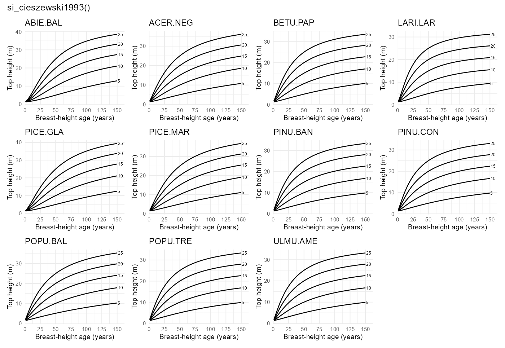
si_cieszewskibella1991()
- Function reference:
si_cieszewskibella1991() - Description: Alberta polymorphic variable-age site-index model for four major tree species Cieszewski and Bella (1991)
- Age type: Breast-height age
- Coverage: AB
- Species coverage: PICE.GLA, PICE.MAR, PINU.CON, POPU.TRE
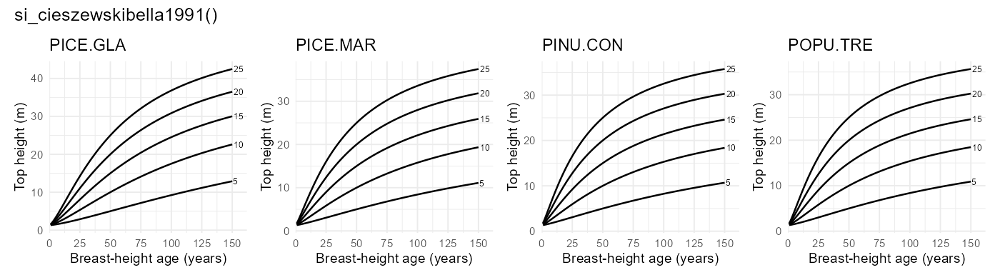
si_goelz1992()
- Function reference:
si_goelz1992() - Description: Goelz and Burk (1992) base-age invariant Chapman-Richards site-index model for jack pine in north central Ontario Goelz and Burk (1992)
- Age type: Breast-height age
- Coverage: ON
- Species coverage: PINU.BAN
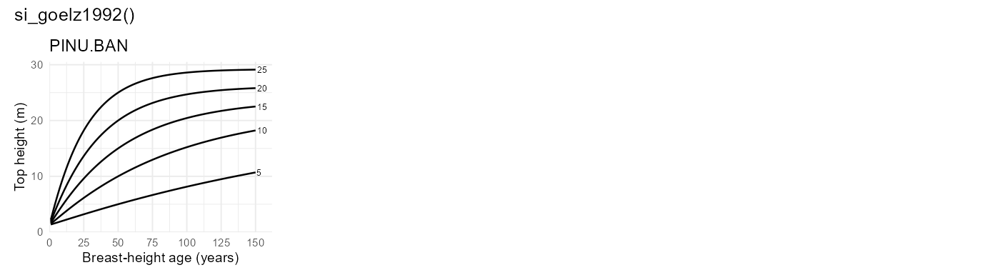
si_goudie1984()
- Function reference:
si_goudie1984() - Description: Goudie (1984) logistic height-age (site-index) model for lodgepole pine and white spruce in British Columbia (SAS-reference implementation; pine dry-site coefficients) Goudie (1984)
- Age type: Breast-height age
- Coverage: BC
- Species coverage: PICE.GLA, PINU.CON
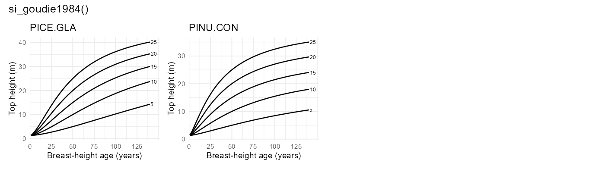
si_huang1994()
- Function reference:
si_huang1994() - Description: Huang et al. (1994) Alberta polymorphic site-index model set Huang et al. (1994)
- Age type: Breast-height age
- Coverage: AB
- Species coverage: ABIE.BAL, PICE.GLA, PICE.MAR, PINU.BAN, PINU.CON, POPU.BAL, POPU.TRE, PSEU.MEN
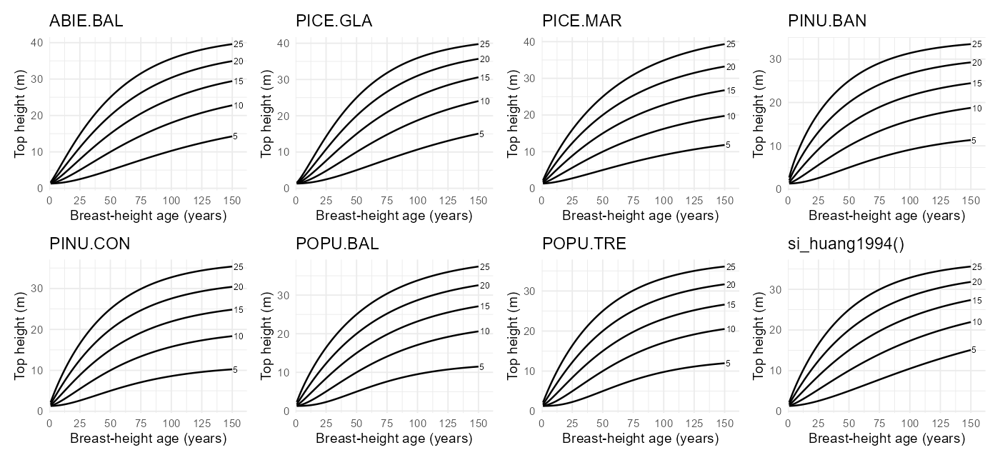
si_hugarcia2009()
- Function reference:
si_hugarcia2009() - Description: Hu and Garcia (2009) interior spruce height-growth and site-index model (BC SBS zone) Hu and García (2010)
- Age type: Breast-height age
- Coverage: BC
- Species coverage: PICE.ENG, PICE.GLA
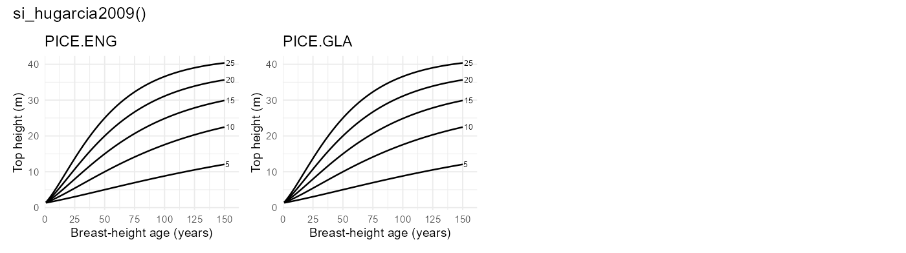
si_kerbowling1991()
- Function reference:
si_kerbowling1991() - Description: New Brunswick polymorphic site-index model for softwoods Ker and Bowling (1991)
- Age type: Breast-height age
- Coverage: NB
- Species coverage: ABIE.BAL, PICE.GLA, PICE.MAR, PINU.BAN
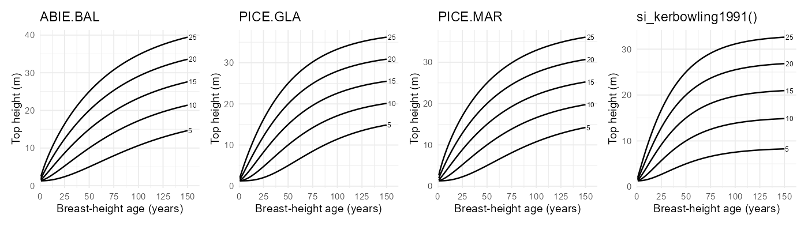
si_lafleche2013()
- Function reference:
si_lafleche2013() - Description: Lafleche et al. (2013) Quebec ecological-site potential-height IQS curves Lafleche et al. (2013)
- Age type: Breast-height age
- Coverage: QC
- Species coverage: ABIE.BAL, BETU.PAP, PICE.GLA, PICE.MAR, PICE.RUB, PINU.BAN, PINU.STR, POPU.GRA, POPU.TRE, THUJ.OCC
This model uses fixed ecological-site curves rather than arbitrary site-index levels. The figure below shows selected example combinations of species and ecological keys for the potential curve set.
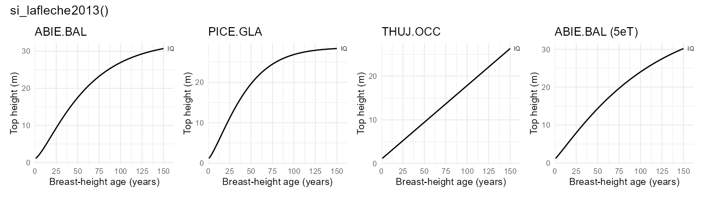
si_lundgrendolid1970()
- Function reference:
si_lundgrendolid1970() - Description: Lundgren and Dolid model (exponential monomolecular form) Lundgren and Dolid (1970)
- Age type: Breast-height age
- Coverage: ON
- Species coverage: ABIE.BAL, BETU.PAP, LARI.LAR, PICE.GLA, PICE.MAR, PINU.BAN, PINU.RES, PINU.STR, POPU.TRE, QUER.RUB, THUJ.OCC
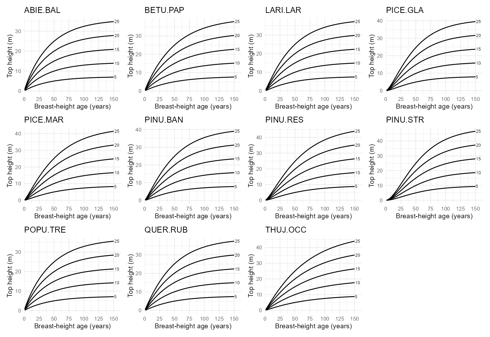
si_nigh1997()
- Function reference:
si_nigh1997() - Description: Nigh (1997) logistic height-age (site index) model for Sitka spruce in coastal British Columbia Nigh (1997)
- Age type: Breast-height age
- Coverage: BC
- Species coverage: PICE.SIT
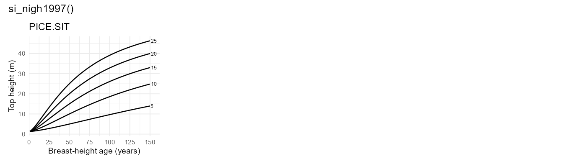
si_nigh1998()
- Function reference:
si_nigh1998() - Description: Nigh (1998) log-logistic height-age (site index) model for western hemlock in the interior of British Columbia Nigh (1998)
- Age type: Breast-height age
- Coverage: BC
- Species coverage: TSUG.HET
si_nigh1998_gi()
- Function reference:
si_nigh1998_gi() - Description: Nigh (1998) growth-intercept site-index model for western hemlock in the interior of British Columbia Nigh (1998)
- Age type: Breast-height age
- Coverage: BC
- Species coverage: TSUG.HET
si_nigh2000()
- Function reference:
si_nigh2000() - Description: Nigh (2000) polymorphic site-index model for interior western redcedar Nigh (2000)
- Age type: Breast-height age
- Coverage: BC
- Species coverage: THUJ.PLI
si_nigh2000_gi()
- Function reference:
si_nigh2000_gi() - Description: Nigh (2000) growth-intercept site-index model for interior western redcedar Nigh (2000)
- Age type: Breast-height age
- Coverage: BC
- Species coverage: THUJ.PLI
No curve graphic shown for growth-intercept model.
si_nigh2002()
- Function reference:
si_nigh2002() - Description: Nigh et al. (2002) trembling aspen height-age (site index) model for British Columbia Nigh et al. (2002)
- Age type: Breast-height age
- Coverage: BC
- Species coverage: POPU.TRE
si_nigh2004()
- Function reference:
si_nigh2004() - Description: Nigh (2004) juvenile height-age (site index) model for lodgepole pine and interior spruce in British Columbia (province-wide and biogeoclimatic-zone parameter sets) Nigh (2004)
- Age type: Total age
- Coverage: BC
- Species coverage: PICE.GLA, PINU.CON
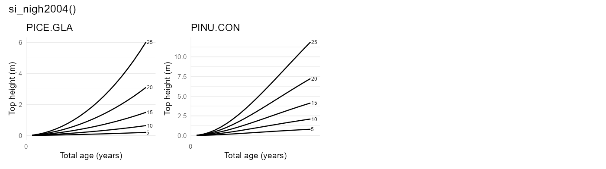
si_nigh2009()
- Function reference:
si_nigh2009() - Description: Nigh et al. (2009) paper birch log-logistic height-age (site index) model for British Columbia (base, operational, and zonal variants) Nigh et al. (2009)
- Age type: Breast-height age
- Coverage: BC
- Species coverage: BETU.PAP
si_nigh2017()
- Function reference:
si_nigh2017() - Description: Nigh (2017) grounded-GADA (Chapman-Richards) height-age (site index) model for lodgepole pine in British Columbia Nigh (2017)
- Age type: Breast-height age
- Coverage: BC
- Species coverage: PINU.CON
si_nighcourtin1998()
- Function reference:
si_nighcourtin1998() - Description: Nigh and Courtin (1998) red alder model, SI25 scale Nigh and Courtin (1998)
- Age type: Breast-height age
- Coverage: BC
- Species coverage: ALNU.RUB
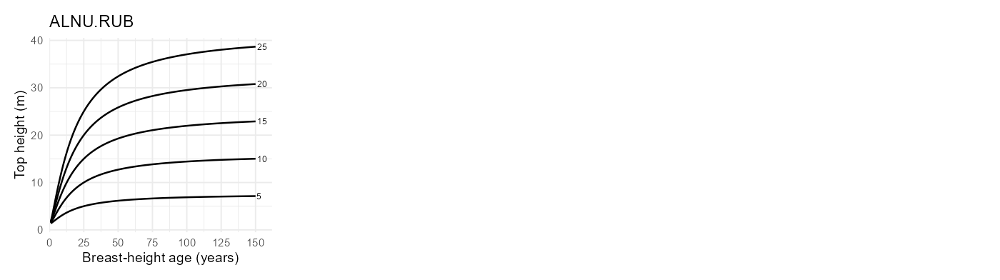
si_parresolvissage1998()
- Function reference:
si_parresolvissage1998() - Description: Parresol and Vissage (1998) base-age invariant eastern white pine model Parresol and Vissage (1998)
- Age type: Breast-height age
- Coverage: NB, NL, NS, ON, PE, QC
- Species coverage: PINU.STR
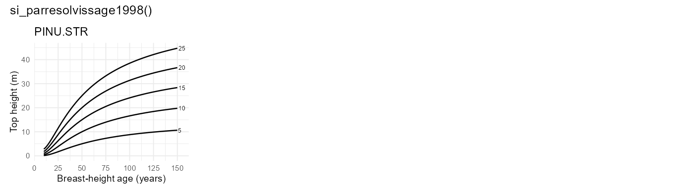
si_payandeh1974()
- Function reference:
si_payandeh1974() - Description: Payandeh (1974) nonlinear site-index equations Payandeh (1974)
- Age type: Breast-height age
- Coverage: Canada (all provinces/territories)
- Species coverage: ABIE.BAL, PICE.GLA, PICE.RUB, PICE.SIT, PINU.CON, PINU.MON, PINU.PON, PSEU.MEN, TSUG.HET
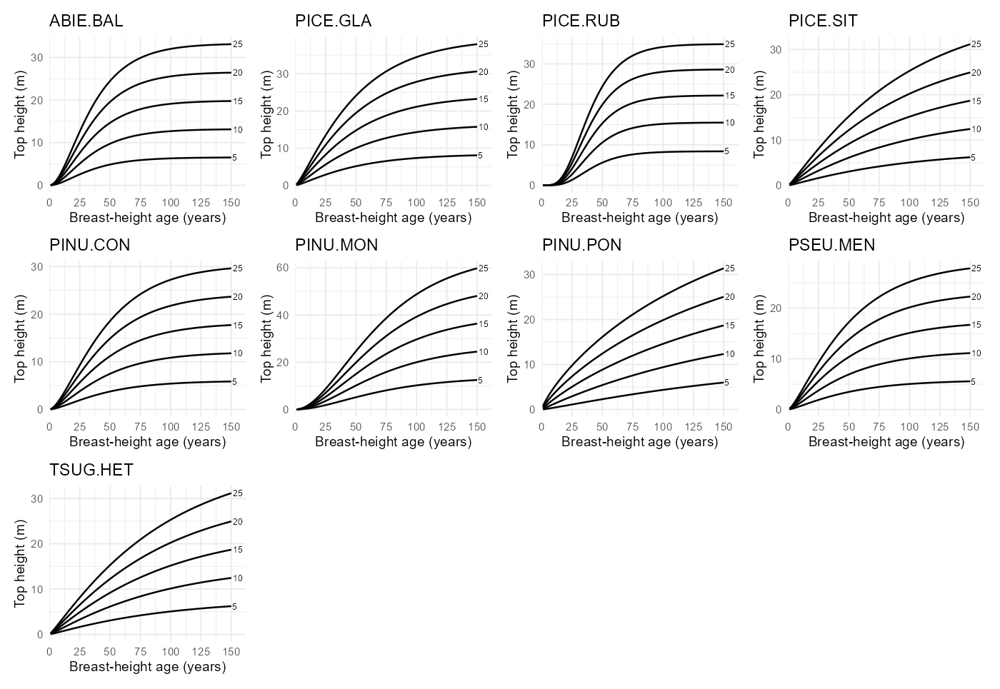
si_pregent2010()
- Function reference:
si_pregent2010() - Description: Pregent et al. (2010) white spruce plantation site-index model Pregent et al. (2010)
- Age type: Breast-height age
- Coverage: QC
- Species coverage: PICE.GLA
si_pregent2016()
- Function reference:
si_pregent2016() - Description: Pregent et al. (2016) Norway spruce plantation site-index model Pregent and Auger (2016)
- Age type: Breast-height age
- Coverage: QC
- Species coverage: PICE.ABI
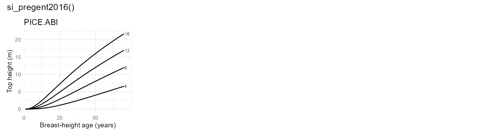
si_scottvoorhis1986()
- Function reference:
si_scottvoorhis1986() - Description: Scott and Voorhis (1986) model using breast-height age directly Scott and Voorhis (1986)
- Age type: Breast-height age
- Coverage: NB, NL, NS, ON, PE, QC
- Species coverage: ABIE.BAL, ACER.SAH, BETU.ALL, BETU.PAP, FRAX.AME, LIQU.STY, LIRI.TUL, PICE.GLA, PICE.MAR, PICE.RUB, PINU.BAN, PINU.ECH, PINU.RES, PINU.STR, PINU.TAE, PINU.VIR, POPU.GRA, QUER.ALB, THUJ.OCC
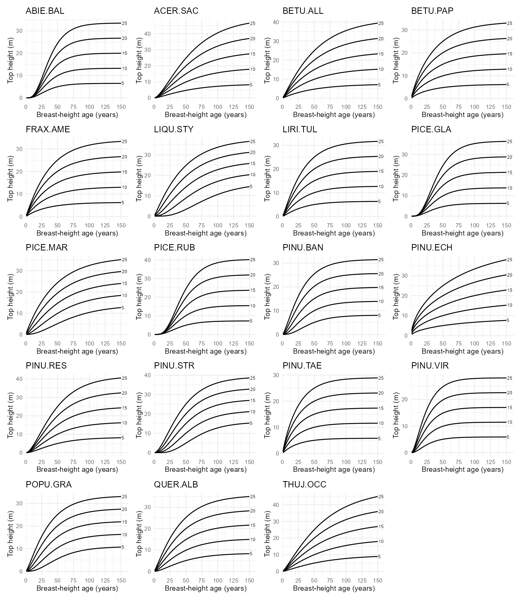
si_sharma2015()
- Function reference:
si_sharma2015() - Description: Sharma et al. (2015) no-climate plantation model for jack pine and black spruce Sharma et al. (2015)
- Age type: Breast-height age
- Coverage: ON
- Species coverage: PICE.MAR, PINU.BAN
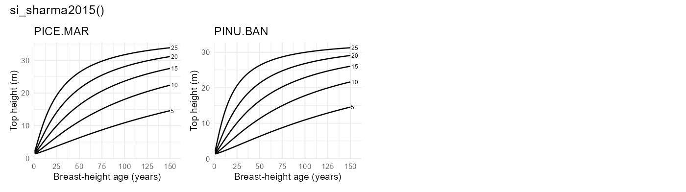
si_sharma2021()
- Function reference:
si_sharma2021() - Description: Sharma (2021) fixed-effects no-climate mixed-stand site-index model Sharma (2021)
- Age type: Breast-height age
- Coverage: ON
- Species coverage: PICE.MAR, PINU.BAN
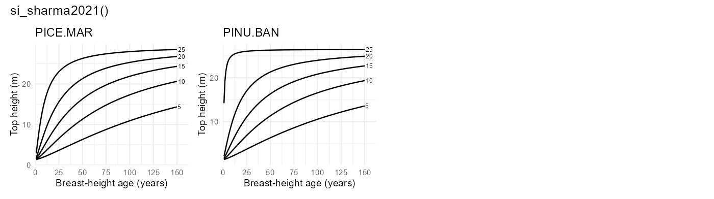
si_sharma2022()
- Function reference:
si_sharma2022() - Description: Sharma (2022) fixed-effects no-climate mixed-stand site-index model Sharma (2022)
- Age type: Breast-height age
- Coverage: ON
- Species coverage: PICE.MAR, POPU.TRE
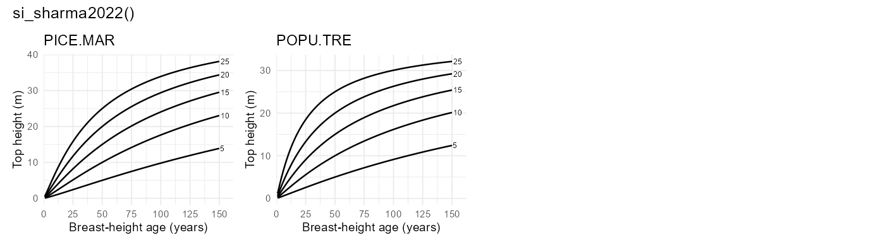
si_sharmaparton2018a()
- Function reference:
si_sharmaparton2018a() - Description: Sharma and Parton (2018) non-climate white spruce plantation model Sharma and Parton (2018a)
- Age type: Breast-height age
- Coverage: ON
- Species coverage: PICE.GLA
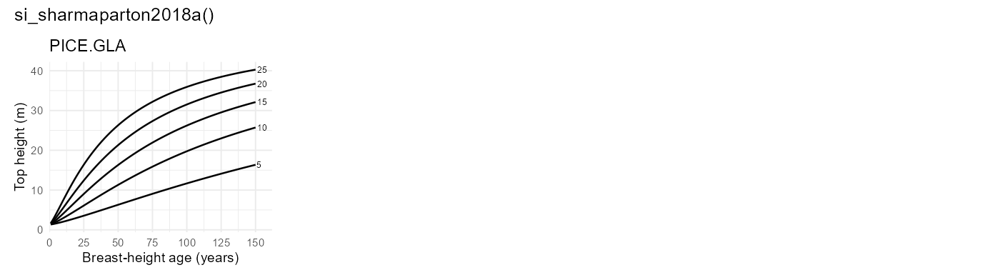
si_sharmaparton2018b()
- Function reference:
si_sharmaparton2018b() - Description: Sharma and Parton (2018) non-climate red pine plantation model Sharma and Parton (2018b)
- Age type: Breast-height age
- Coverage: ON
- Species coverage: PINU.RES
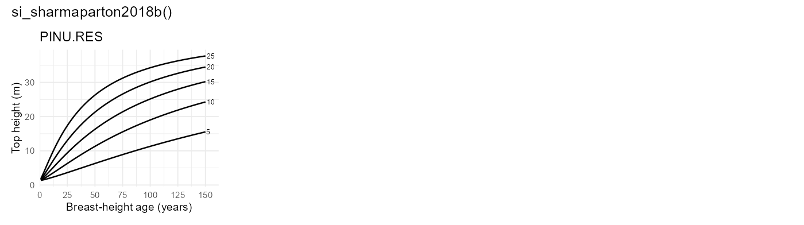
si_sharmaparton2019()
- Function reference:
si_sharmaparton2019() - Description: Sharma and Parton (2019) non-climate white pine plantation model Sharma and Parton (2019)
- Age type: Breast-height age
- Coverage: ON
- Species coverage: PINU.STR
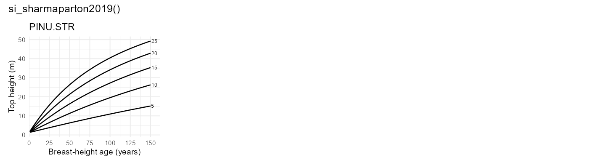
si_sharmareid2018()
- Function reference:
si_sharmareid2018() - Description: Sharma and Reid (2018) fixed-effects natural-stand site-index model Sharma and Reid (2018)
- Age type: Breast-height age
- Coverage: ON
- Species coverage: PICE.MAR, PINU.BAN
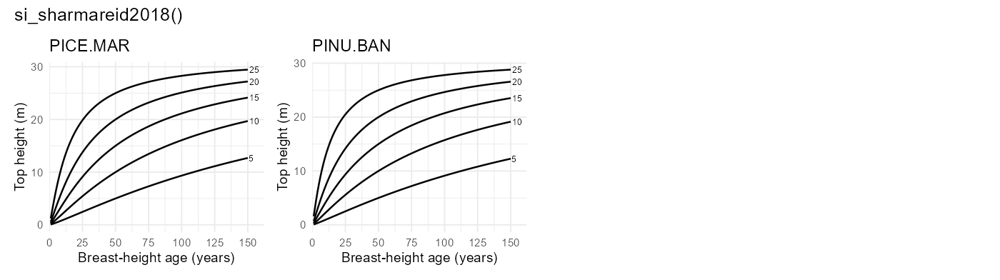
si_thrower1994()
- Function reference:
si_thrower1994() - Description: Thrower et al. (1994) BC interior species model set Thrower et al. (1994)
- Age type: Breast-height age
- Coverage: BC
- Species coverage: ABIE.LAS, BETU.PAP, LARI.OCC, PICE.GLA, PINU.CON, PINU.MON, PINU.PON, POPU.TRE, PSEU.MEN, THUJ.PLI, TSUG.HET
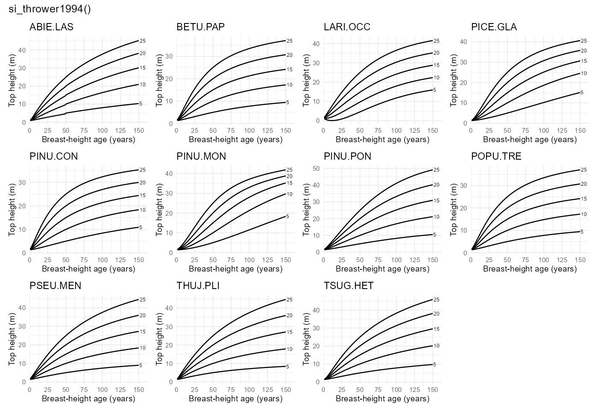
References
Alemdag, I.S., 1991. National site-index and height-growth curves for white spruce growing in natural stands in Canada. Canadian Journal of Forest Research 21, 1466–1474. https://doi.org/10.1139/x91-206
Auger, I., Ward, C., 2021. Tables de rendement pour les plantations d’epinette noire et les plantations de pin gris au quebec (No. SSS-06), Avis technique. Gouvernement du Quebec, Quebec.
Batho, A., García, O., 2014. A site index model for lodgepole pine in British Columbia. Forest Science 60, 982–987. https://doi.org/10.5849/forsci.13-509
Buckmann, R.E., Bishaw, B., Hanson, T.J., Benford, F.A., 2006. Growth and yield of red pine in the lake states (No. NC-271), General technical report. U.S. Department of Agriculture, Forest Service.
Carmean, W.H., 1996. Site-quality evaluation, site-quality maintenance, and site-specific management for forest land in northwest ontario (No. TR-105), NWST technical report. Ontario Ministry of Natural Resources, Northwest Science; Technology, Thunder Bay, Ontario.
Carmean, W.H., Hahn, J.T., 1981. Revised Site Index Curves for Balsam Fir and White Spruce in the Lake States. Research Note NC-269. St. Paul, MN: U.S. Dept. of Agriculture, Forest Service, North Central Forest Experiment Station 269. https://doi.org/10.2737/NC-RN-269
Carmean, W.H., Hahn, J.T., Jacobs, R.D., 1989. Site index curves for forest tree species in the eastern united states (No. NC-128), General technical report. U.S. Department of Agriculture, Forest Service, North Central Forest Experiment Station.
Carmean, W.H., Hazenberg, G., Deschamps, K.C., 2006. Polymorphic site index curves for black spruce and trembling aspen in northwest Ontario. The Forestry Chronicle 82, 213–231. https://doi.org/10.5558/tfc82213-2
Carmean, W.H., Niznowski, G.P., Hazenberg, G., 2001. Polymorphic site index curves for jack pine in northern Ontario. The Forestry Chronicle 77, 141–150. https://doi.org/10.5558/tfc77141-1
Cieszewski, C.J., Bella, I.E., 1991. Polymorphic height and site index curves for the major tree species in alberta (No. 51), Forest management note. Forestry Canada, Northwest Region, Northern Forestry Centre, Edmonton, Alberta.
Cieszewski, C.J., Bella, I.E., Yeung, D.P., 1993. Preliminary site-index height growth curves for eleven timber species in Saskatchewan (Draft unpublished project report). Natural Resources Canada, Canadian Forest Service, Prince Albert, Saskatchewan.
Goelz, J.C.G., Burk, T.E., 1992. Development of a well-behaved site index equation: Jack pine in north central Ontario. Canadian Journal of Forest Research 22, 776–784. https://doi.org/10.1139/x92-105
Goudie, J.W., 1984. Height growth and site index curves for lodgepole pine and white spruce and interim managed stand yield tables for lodgepole pine in British Columbia (Final Report FY-1983-84). Research Branch, British Columbia Ministry of Forests, Victoria, B.C.
Hu, Z., García, O., 2010. A height-growth and site-index model for interior spruce in the Sub-Boreal Spruce biogeoclimatic zone of British Columbia. Canadian Journal of Forest Research 40, 1175–1183. https://doi.org/10.1139/X10-076
Huang, S., Titus, S.J., Lakusta, T.W., 1994. Ecologically based site index curves and tables for major Alberta tree species. Tech. Report No. T307.
Ker, M.F., Bowling, C., 1991. Polymorphic site index equations for four New Brunswick softwood species. Canadian Journal of Forest Research 21, 728–732. https://doi.org/10.1139/x91-103
Lafleche, V., Bernier, S., Saucier, J.-P., Gagne, C., 2013. Indices de qualite de station des principales essences commerciales en fonction des types ecologiques du quebec meridional. Ministere des Ressources naturelles, Direction des inventaires forestiers, Quebec.
Lundgren, A.L., Dolid, W.A., 1970. Biological growth functions describe published site index curves for Lake States timber species. Research Paper NC-36. St. Paul, MN: U.S. Dept. of Agriculture, Forest Service, North Central Forest Experiment Station 36.
Nigh, G.D., 2017. Development of a lodgepole pine site index model with the grounded-Generalized Algebraic Difference Approach (g-GADA) (Research Report No. 31). Province of British Columbia, Victoria, B.C.
Nigh, G.D., 2004. Juvenile height models for lodgepole pine and interior spruce: Validation of existing models and development of new models (Research Report No. 25). Province of British Columbia, Victoria, B.C.
Nigh, G.D., 2000. Western redcedar site index models for the interior of British Columbia (No. Rep. 18). BC Ministry of Forests, Research Branch, Victoria, B.C.
Nigh, G.D., 1998. A system for estimating height and site index of western hemlock in the interior of British Columbia. The Forestry Chronicle 74, 588–596.
Nigh, G.D., 1997. A Sitka spruce height-age model with improved extrapolation properties. The Forestry Chronicle 73, 363–369.
Nigh, G.D., Courtin, P.J., 1998. Height models for Red Alder (Alnus rubra Bong.) in British Columbia. New Forests 16, 59–70. https://doi.org/10.1023/A:1006561502635
Nigh, G.D., Krestov, P.V., Klinka, K., 2002. Trembling aspen height-age models for British Columbia. Northwest Science 76, 202–212.
Nigh, G.D., Thomas, K.D., Yearsley, K., Wang, J., 2009. Site-dependent height-age models for paper birch in British Columbia. Northwest Science 83, 253–261. https://doi.org/10.3955/046.083.0308
Parresol, B.R., Vissage, J.S., 1998. White pine site index for the southern forest survey (No. Research Paper SRS-10). U.S. Department of Agriculture, Forest Service, Southern Research Station, Asheville, NC.
Payandeh, B., 1974. Nonlinear site index equations for several major Canadian timber species. The Forestry Chronicle 50, 194–196. https://doi.org/10.5558/tfc50194-5
Pregent, G., Auger, I., 2016. Tarif de cubage, tables de rendement et modeles de croissance pour les plantations d’epinette de norvege au quebec (No. 176), Memoire de recherche forestiere. Ministere des Forets, de la Faune et des Parcs, Direction de la recherche forestiere, Quebec.
Pregent, G., Picher, G., Auger, I., 2010. Tarif de cubage, tables de rendement et modeles de croissance pour les plantations d’epinette blanche au quebec (No. 160), Memoire de recherche forestiere. Ministere des Ressources naturelles et de la Faune, Direction de la recherche forestiere, Quebec.
Scott, C.T., Voorhis, N.G., 1986. Northeastern Forest Survey Site Index Equations and Site Productivity Classes. Northern Journal of Applied Forestry 3, 144–148. https://doi.org/10.1093/njaf/3.4.144
Sharma, M., 2022. Climate effects on black spruce and trembling aspen productivity in natural origin mixed stands. Forests 13, 430. https://doi.org/10.3390/f13030430
Sharma, M., 2021. Climate effects on jack pine and black spruce productivity in natural origin mixed stands and site index conversion equations. Trees, Forests and People 5, 100089. https://doi.org/10.1016/j.tfp.2021.100089
Sharma, M., Parton, J., 2019. Modelling the effects of climate on site productivity of white pine plantations. Canadian Journal of Forest Research 49, 1289–1297. https://doi.org/10.1139/cjfr-2019-0165
Sharma, M., Parton, J., 2018a. Analyzing and modelling effects of climate on site productivity of white spruce plantations. The Forestry Chronicle 94, 173–182.
Sharma, M., Parton, J., 2018b. Climatic effects on site productivity of red pine plantations. Forest Science 64, 544–554.
Sharma, M., Reid, D.E.B., 2018. Stand height/site index equations for jack pine and black spruce trees grown in natural stands. Forest Science 64, 33–40. https://doi.org/10.5849/FS-2016-133
Sharma, M., Subedi, N., Ter-Mikaelian, M., Parton, J., 2015. Modeling climatic effects on stand height/site index of plantation-grown jack pine and black spruce trees. Forest Science 61, 25–34. https://doi.org/10.5849/forsci.13-190
Thrower, J.S., Nussbaum, A.F., Di Lucca, C.M., 1994. Site index curves and tables for british columbia: Interior species (No. Field Guide Insert 6), Land management handbook. B.C. Ministry of Forests.